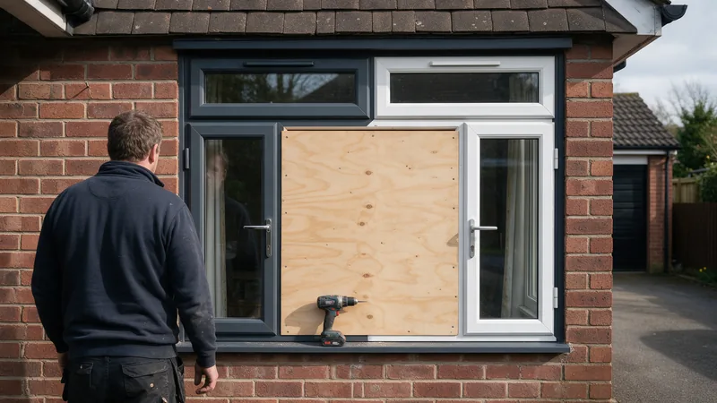

Urgent help
Make it safe tonight. Make it right after.
Glass gone in a window or a door, or a door that will not lock after it has been damaged. Those are the two we drop other things for. The first visit is about getting the house safe and shut, not about getting it finished.
A demo number from the range Ofcom keeps for television and film. It rings nobody.
First ten minutes
Do and do not.
Do
- Ring 999 first if anybody is cut badly. Glass bleeds more than people expect and a window can wait.
- Get children and animals out of the room, and put shoes on before you go in.
- If it was a break in, ring the police. 101 to report it, or 999 if you think somebody is still there.
- Take photographs before you move anything, for your insurer.
- Sweep up what has fallen, then go over it with a damp cloth or a vacuum for the splinters you cannot see.
- Move anything worth taking out of sight of a door or window that will not lock.
Do not
- Do not pull at glass that is still standing in the frame. That is how most people get hurt after the event rather than during it.
- Do not tidy or repair anything after a break in until the police have been.
- Do not put broken glass in your wheelie bin loose. It goes in a rigid box or we take it.
- Do not force a damaged door shut to make it latch. You will bend the mechanism and turn one job into two.
- Do not leave a boarded opening as the finished answer and forget about it. Board is for a night or two, not a season.
Two common ones
What happens when you ring.
Broken glass
A stone, a ball, a gust that caught an open window, or somebody putting a wheelbarrow through it. We clear the glass out of the frame and off the floor, then either board the opening or put temporary glass in, depending on the window and how long the real unit will take to make. The proper glass is measured once the frame is empty, because that is the only way to get it right.
A door that will not lock after damage
Usually the frame or the keeps rather than the door. If the mechanism still works and the keeps have moved, it can often be got shutting and locking again on the first visit. Where the frame itself has split, it gets secured for the night and put right properly in daylight, with the keeps going back into something solid.
Written for this demo. No response time is promised anywhere on this site, because inventing one would be making a figure up.

Generated photoGenerated for this demo. Not a photograph of a real job.
What making safe actually means
It means the house is shut, dry and lockable tonight. Glass cleared from the frame and the floor, the opening boarded square and screwed rather than propped, or temporary glass fitted where the opening suits it. A door that will not lock gets the keeps and the mechanism looked at so it at least shuts and locks, even if the proper repair is still to come.
What it does not mean is finished. Board is a few nights, not a few months. The measure for the real glass happens once the frame is clear, and the repair gets booked in daylight with the right parts on the van.
If it was a break in
The police first, every time. Ring 101 to report it, or 999 if you think somebody is still in the house or nearby. Do not tidy, do not sweep and do not repair anything until they have been, because what looks like a mess to you is where they came in to somebody else.
After that, photographs for the insurer before anything moves. Most policies want to see the damage as it was, and a tidy room is harder to claim on than a photograph of a broken one.
Rented houses
Ring the landlord or the agent before you book anybody. In most tenancies they arrange the repair and they pay for it, and getting work done without telling them causes a different sort of argument. Making safe to stop the house being open is a different matter. Do that, keep the receipt and tell them the same evening.
Questions
Asked at the worst moment.
A pane has gone in my front window. Is that a whole new window?
Almost never. In a double glazed window the glass is a sealed unit that sits in the frame, so the frame stays and a new unit goes in. The exception is where the frame itself was damaged, and you would usually know that from looking at it.
The timing is the thing people are not expecting. Units are made to the measured size, so the frame gets boarded or temporary glazed first and the real glass comes after.
Can you board it up tonight?
That is what the first visit is for. Board goes on square and screwed, not propped, and it comes off again when the glass arrives. We will not pretend a boarded window is a finished job, and we will not charge you for the board twice.
My door will not lock after somebody tried the handle hard. Is the door ruined?
Usually not. On a uPVC or composite door the damage is nearly always in the keeps, the frame or the mechanism rather than the door itself. Those are all parts. The door being past saving is the unusual outcome, not the normal one.
Should I ring you or the police first?
The police, if it was a break in or an attempt. 101 to report it, 999 if you think somebody is still there. Then us. Nothing we do needs doing before they have seen it, and tidying up first can cost you the evidence and the claim.
Will my insurance pay for it?
Some policies cover accidental glass breakage and some do not, and we are not going to tell you yours does when we have not read it. Photograph everything before it moves, keep what the police tell you, and ring your insurer before any permanent repair is agreed.
Need somebody out?
Tell us what has happened and your postcode. If the house is open to the street right now, ring rather than typing.